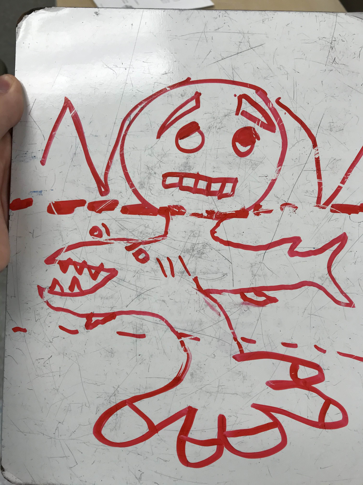

1 / 8
I drew the torso on this one. I love the tiny head juxtaposed with the huge body and legs.
2 / 8
I drew legs. The "Do Not Feed!" sign at the bottom gives new context to the dog's expression. They're kinda cute, though, surely it's fine to break the rules just this once?
3 / 8
I drew head. Slug butt the magnificent!
4 / 8
I drew head. This creature is somehow overweight and anorexic at the same time.
5 / 8

I drew torso. It's fun to draw things other than arms for the torso.
6 / 8
I drew torso, the head and legs were drawn by the same kid. This one is cute, makes me think of a mother and child.
7 / 8
I drew legs. Each morning I like to start my day with a delicious The Creature (tm) smoothie.
8 / 8

Monster Maker played with some artist friends in the (now defunct) pixel art game: Manyland. From left to right, I drew the head, legs, and torso.